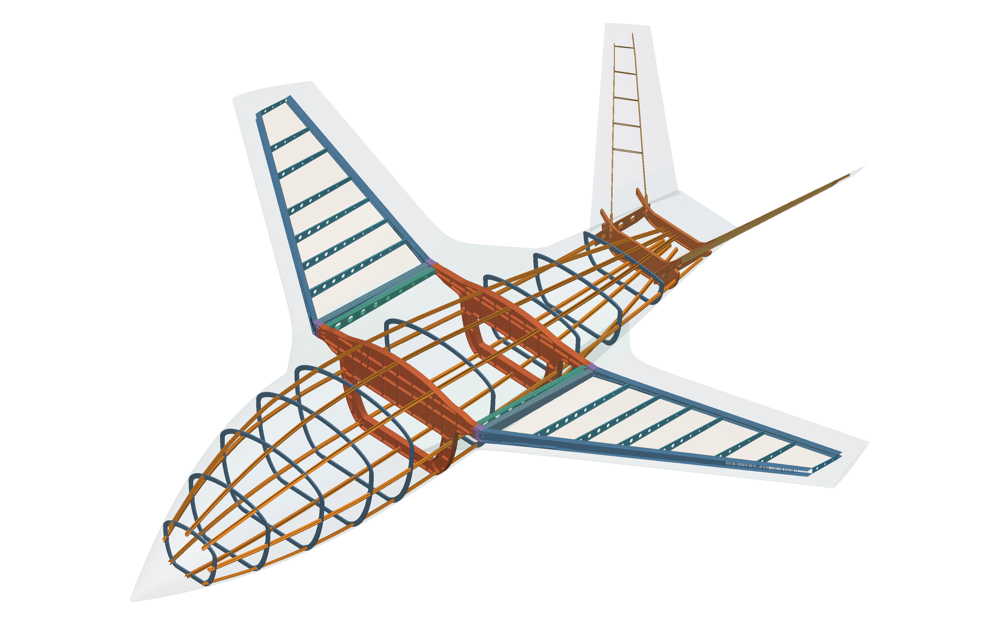

nTop / Civil research aircraft / Version 0.2.0
Revision O with 77 skin panels
Built with Astra. Current native structure, installed and exploded panel views, and the retained Revision N panel schedule.
The exterior panels are surfaces with no physical sheet gauge. Geometric checks do not establish strength, fatigue, manufacturing or flight release.

Open the models
Keep the references folder with the models. The exploded translations are display offsets, not a verified removal sequence.
Later work
Revision N uses wider wing bays, 16 wing ribs across both sides, and 77 exterior panels. Revision O reorients ten tail ribs to the local tail span. It adds wider lands and support ribs at the four spar-root forks. The source records report 2,164 native feature probes. Tail strength, buckling and fatigue remain unverified.
Both complete viewing models embed the current structural definitions. Saving another part file does not refresh those snapshots.
Panel schedule
| Panel | Region | Side | Face | Surface area [in^2] | Status |
|---|---|---|---|---|---|
| N01 | Nose | Both | Wrap | 2114.96 | Proposed removable layout surface; thickness and attachment details pending |
| F01UP | Fuselage | P | U | 3553.46 | Proposed removable layout surface; thickness and attachment details pending |
| F01LP | Fuselage | P | L | 5285.37 | Proposed removable layout surface; thickness and attachment details pending |
| F01US | Fuselage | S | U | 3550.33 | Proposed removable layout surface; thickness and attachment details pending |
| F01LS | Fuselage | S | L | 5288.34 | Proposed removable layout surface; thickness and attachment details pending |
| F02UP | Fuselage | P | U | 1122.08 | Proposed removable layout surface; thickness and attachment details pending |
| B02UP | Blend | P | U | 1463.09 | Proposed removable layout surface; thickness and attachment details pending |
| F02LP | Fuselage | P | L | 1193.81 | Proposed removable layout surface; thickness and attachment details pending |
| B02LP | Blend | P | L | 2516.2 | Proposed removable layout surface; thickness and attachment details pending |
| F02US | Fuselage | S | U | 1122.08 | Proposed removable layout surface; thickness and attachment details pending |
| B02US | Blend | S | U | 1463.07 | Proposed removable layout surface; thickness and attachment details pending |
| F02LS | Fuselage | S | L | 1193.81 | Proposed removable layout surface; thickness and attachment details pending |
| B02LS | Blend | S | L | 2516.26 | Proposed removable layout surface; thickness and attachment details pending |
| F03UP | Fuselage | P | U | 841.96 | Proposed removable layout surface; thickness and attachment details pending |
| B03UP | Blend | P | U | 1372.82 | Proposed removable layout surface; thickness and attachment details pending |
| F03LP | Fuselage | P | L | 901.82 | Proposed removable layout surface; thickness and attachment details pending |
| B03LP | Blend | P | L | 2150.86 | Proposed removable layout surface; thickness and attachment details pending |
| F01 | Fuselage | S | U | 841.96 | Retained detailed Revision L sample footprint |
| B01 | Blend | S | U | 1372.83 | Retained detailed Revision L sample footprint |
| F03LS | Fuselage | S | L | 901.8 | Proposed removable layout surface; thickness and attachment details pending |
| B03LS | Blend | S | L | 2150.89 | Proposed removable layout surface; thickness and attachment details pending |
| F04UP | Fuselage | P | U | 617.84 | Proposed removable layout surface; thickness and attachment details pending |
| B04UP | Blend | P | U | 1234.84 | Proposed removable layout surface; thickness and attachment details pending |
| F04LP | Fuselage | P | L | 655.99 | Proposed removable layout surface; thickness and attachment details pending |
| B04LP | Blend | P | L | 1926.0 | Proposed removable layout surface; thickness and attachment details pending |
| F04US | Fuselage | S | U | 617.83 | Proposed removable layout surface; thickness and attachment details pending |
| B04US | Blend | S | U | 1234.73 | Proposed removable layout surface; thickness and attachment details pending |
| F04LS | Fuselage | S | L | 655.99 | Proposed removable layout surface; thickness and attachment details pending |
| B04LS | Blend | S | L | 1926.11 | Proposed removable layout surface; thickness and attachment details pending |
| F05UP | Fuselage | P | U | 754.97 | Proposed removable layout surface; thickness and attachment details pending |
| F05LP | Fuselage | P | L | 1133.25 | Proposed removable layout surface; thickness and attachment details pending |
| F05US | Fuselage | S | U | 754.58 | Proposed removable layout surface; thickness and attachment details pending |
| F05LS | Fuselage | S | L | 1133.65 | Proposed removable layout surface; thickness and attachment details pending |
| F06UPA | Fuselage | P | U | 888.28 | Proposed removable layout surface; thickness and attachment details pending |
| F06UPB | Fuselage | P | U | 94.82 | Proposed removable layout surface; thickness and attachment details pending |
| F06LPA | Fuselage | P | L | 965.0 | Proposed removable layout surface; thickness and attachment details pending |
| F06LPB | Fuselage | P | L | 224.06 | Proposed removable layout surface; thickness and attachment details pending |
| F06USA | Fuselage | S | U | 888.26 | Proposed removable layout surface; thickness and attachment details pending |
| F06USB | Fuselage | S | U | 95.88 | Proposed removable layout surface; thickness and attachment details pending |
| F06LSA | Fuselage | S | L | 964.01 | Proposed removable layout surface; thickness and attachment details pending |
| F06LSB | Fuselage | S | L | 224.06 | Proposed removable layout surface; thickness and attachment details pending |
| F07UP | Fuselage | P | U | 679.61 | Proposed removable layout surface; thickness and attachment details pending |
| F07LPA | Fuselage | P | L | 455.56 | Proposed removable layout surface; thickness and attachment details pending |
| F07LPB | Fuselage | P | L | 225.86 | Proposed removable layout surface; thickness and attachment details pending |
| F07US | Fuselage | S | U | 679.3 | Proposed removable layout surface; thickness and attachment details pending |
| F07LSA | Fuselage | S | L | 455.39 | Proposed removable layout surface; thickness and attachment details pending |
| F07LSB | Fuselage | S | L | 225.97 | Proposed removable layout surface; thickness and attachment details pending |
| WTP | Wing tip | P | Wrap | 846.15 | Proposed removable layout surface; thickness and attachment details pending |
| W-LE-P | Wing edge | P | Wrap | 2816.43 | Proposed removable layout surface; thickness and attachment details pending |
| W-TE-P | Wing edge | P | Wrap | 3730.37 | Proposed removable layout surface; thickness and attachment details pending |
| W01BUP | Wing box | P | U | 1438.42 | Proposed removable layout surface; thickness and attachment details pending |
| W01BLP | Wing box | P | L | 1438.47 | Proposed removable layout surface; thickness and attachment details pending |
| W02BUP | Wing box | P | U | 1231.27 | Proposed removable layout surface; thickness and attachment details pending |
| W02BLP | Wing box | P | L | 1228.31 | Proposed removable layout surface; thickness and attachment details pending |
| W03BUP | Wing box | P | U | 1393.87 | Proposed removable layout surface; thickness and attachment details pending |
| W03BLP | Wing box | P | L | 1390.09 | Proposed removable layout surface; thickness and attachment details pending |
| W04BUP | Wing box | P | U | 877.52 | Proposed removable layout surface; thickness and attachment details pending |
| W04BLP | Wing box | P | L | 875.02 | Proposed removable layout surface; thickness and attachment details pending |
| WTS | Wing tip | S | Wrap | 846.13 | Proposed removable layout surface; thickness and attachment details pending |
| W-LE-S | Wing edge | S | Wrap | 2816.49 | Proposed removable layout surface; thickness and attachment details pending |
| W-TE-S | Wing edge | S | Wrap | 3730.38 | Proposed removable layout surface; thickness and attachment details pending |
| W01BUS | Wing box | S | U | 1438.42 | Proposed removable layout surface; thickness and attachment details pending |
| W01BLS | Wing box | S | L | 1438.47 | Proposed removable layout surface; thickness and attachment details pending |
| W02BUS | Wing box | S | U | 1231.27 | Proposed removable layout surface; thickness and attachment details pending |
| W02BLS | Wing box | S | L | 1228.31 | Proposed removable layout surface; thickness and attachment details pending |
| W03BUS | Wing box | S | U | 1393.87 | Proposed removable layout surface; thickness and attachment details pending |
| W03BLS | Wing box | S | L | 1390.08 | Proposed removable layout surface; thickness and attachment details pending |
| W04BUS | Wing box | S | U | 877.52 | Proposed removable layout surface; thickness and attachment details pending |
| W04BLS | Wing box | S | L | 875.02 | Proposed removable layout surface; thickness and attachment details pending |
| T-LE-P | Tail | P | Wrap | 1237.05 | Proposed removable layout surface; thickness and attachment details pending |
| T-TE-P | Tail | P | Wrap | 1569.37 | Proposed removable layout surface; thickness and attachment details pending |
| T-MID-O-P | Tail | P | O | 915.35 | Proposed removable layout surface; thickness and attachment details pending |
| T-MID-I-P | Tail | P | I | 943.67 | Proposed removable layout surface; thickness and attachment details pending |
| T-LE-S | Tail | S | Wrap | 1237.01 | Proposed removable layout surface; thickness and attachment details pending |
| T-TE-S | Tail | S | Wrap | 1569.28 | Proposed removable layout surface; thickness and attachment details pending |
| T-MID-O-S | Tail | S | O | 915.35 | Proposed removable layout surface; thickness and attachment details pending |
| T-MID-I-S | Tail | S | I | 943.66 | Proposed removable layout surface; thickness and attachment details pending |
Verification
The new 77-panel publication copy passed native extended readback in nTop 6.1.0-rc build 42926. The complete installed and exploded copies preserve their non-index native payloads byte for byte. Their function graphs, geometry caches and display state are unchanged. File-path metadata points to bundled imports. They were not rerun during publication. No new structural solve was performed.